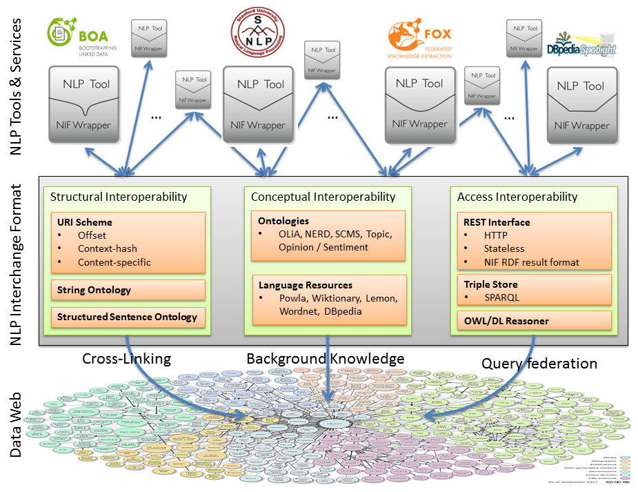
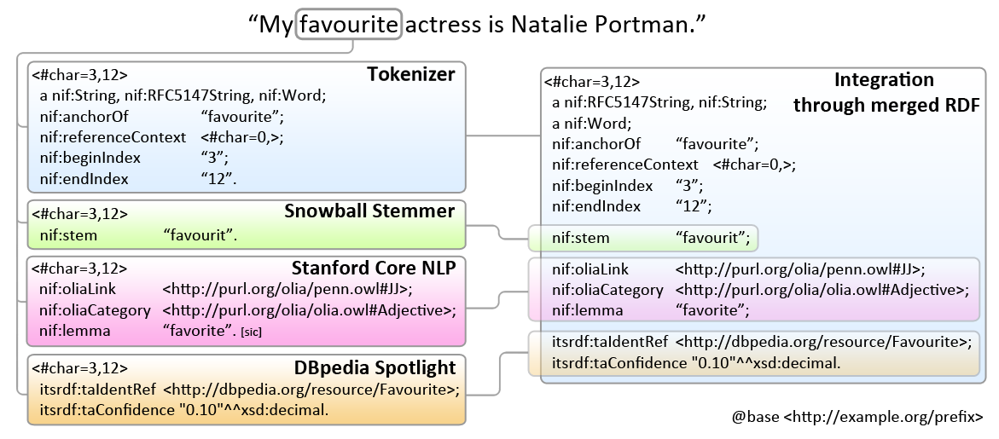

Linguistic LOD & Ontologies
Vladimir Alexiev, Ontotext Corp
vladimir.alexiev@ontotext.com
2014-06-03
Press O for overview, H for help.
Made with reveal.js and org-reveal.
Table of Contents
Motivation
There's been a flurry of activity in recent years to represent NLP data as RDF.
- Covers: Text Annotation (eg NIF, OLIA), Lexical Resources (eg WordNetRDF), Corpora (eg MASC), Semantic Annotation, Opinion/Sentiment Analysis
- Working groups: OntoLex (W3C; Cimiano, Bielefeld), OLWG (OKFN; Chiarcos, Frankfurt), LD4LT (W3C; Lewis, Trinity Dublin), BPMLOD (W3C; Gracia, UPM)
- Projects: MultilingualWeb, LIDER, FALCON, BabelNet, etc, etc
NLP data is usually large, why represent it in RDF?
- Graph model is flexible and universal, appropriate for NLP
- RDF adds schemas and reasoning
- Large linguistic resources are available that may be used profitably
Artifacts
- XML schemas: GRaF, ITS2, LAF, LMF (ISO standards), UBY
- Ontologies: FISE, ITS2 (W3C standard), LEMON, LIME, MARL, NERD, NIF (NLP2RDF), OLIA, OntoLing, OntoTag, Penn, Stanford
- Linguistic thesauri: GOLD, ISOcat, NERD
- Lexical resources: BabelNet, FrameNet, LemonUBY, OmegaNet, VerbNet, Wiktionary2RDF, WordNetRDF
- Corpora: Multitext, MASC?
Tag Cloud
Text Annotation Lexical Resources Corpora Semantic Annotation Opinion/Sentiment Analysis Working Groups: OntoLex LD4LT BPMLOD Projects: MultilingualWeb LIDER FALCON XML schemas: GRaF ITS2 LAF LMF UBY Ontologies: FISE ITS2 LEMON LIME MARL NERD NIF NLP2RDF OLIA OntoLing OntoTag Penn Stanford Linguistic thesauri: GOLD ISOcat NERD Lexical resources: BabelNet FrameNet LemonUBY OmegaNet VerbNet Wiktionary2RDF WordNetRDF Corpora: Multitext MASCZotero Bibliography
Collaborative bibliography on Linguistic LOD: representing language resources and text annotations as RDF.
- Zotero Group: join so you can collaborate
- Zotero Library: accessible on the web

- Intro: Christian Chiarcos, John McCrae, Philipp Cimiano, and Christiane Fellbaum. Towards Open Data for Linguistics: Linguistic Linked Data. In New Trends of Research in Ontologies and Lexical Resources. Theory and Applications of Natural Language Processing. Springer Berlin Heidelberg, 2013.
Zotero Collaboration
- Install Zotero (FireFox plugin, or Zotero Standalone+Chrome), see below
- Collaborative tags (must add for each resource):
- The topics above; add new topics freely
- HasRead: someone's read it, please add some Notes
- MustRead: likely to be used in Multisensor
- If possible, add abstract, URL, the article itself.

Linguistic LOD

NLP Example
Detailed example of annotating one sentence
- Integrates knowledge about many of the ontologies described here
- http://vladimiralexiev.github.io/Multisensor/NIF-example.ttl
Areas covered include:
- Binding to text (NIF)
- Lemma/stem (NIF)
- POS tagging (Penn)
- Dependency parsing (Stanford)
- Semantic annotation classes (NERD, ITS2)
- Semantic annotation individuals (DBpedia, WordNet, ITS2)
- Multiple semantic annotations (FISE/Stanbol)
- Opinion/sentiment (MARL)
Linguistic ontologies
We describe briefly the following linguistic ontologies
- NIF (NLP2RDF): bind nodes to text, basic NLP properties
- OLIA: tagsets, morphological/syntactic/parsing representations
- Some OLIA constituents: Penn, Stanford
- ITS2: semantic annotation properties
- NERD: Semantic annotation classes
- FISE (Stanbol): multiple semantic annotations
- MARL: Opinion/sentiment
- LEMON, LIME (?TODO): lexicographic info (dictionaries)
NIF: Overall Idea
NIF: Example (Merging Triples)
NIF: Representation Profiles

NIF: Domain Model

OLIA and Constituents
Penn
Stanford
ITS2
NERD
FISE (Stanbol)
MARL
LEMON
Linguistic thesauri
ISOcat
GOLD
Linguistic Linked Datasets
In the following slides I describe large-scale Linguistic resources.
Datasets already integrated in FactForge:
- WordNet (includes the W3C RDF representation of WordNet 3.1)
- Lingvoj, Lexvo: info about languages
WordNet
WordNet: well-known and prototypical lexical resource
- 117k synsets, glosses, numerous synonyms (words/phrases).
- Hyponyms/hyperonyms, meronyms, antonyms
- Uses its own properties
- Ontology developed by W3C in 2005
ImageNet
./img/imagenet.jpg includes sample images for WordNet
- 5k images per noun synset!
- enables automatic image annotation
- human-curated bounding boxes, eg "fox" and "airplane"


WordNet RDF
Wiktionary
BabelNet
- 50 languages covered
- Integrates WordNet, Open Multilingual WordNet, Wikipedia, OmegaWiki, Wikidata, Wiktionary
- Useful for multilingual joint Word Sense Disambiguation
- 9.3M synsets, 67M senses
- 21.7M textual definitions
- 262M semantic relations
- 7.7M synset-associated images
- 1.1 billion triples in RDF/Lemon, available for download, public SPARQL endpoint
- Java APIs for programmatic access
Babelfy
Babelfy: annotation API based on BabelNet (just released)
- Evaluation on Energy news item (green: ok concepts, yellow: ok entities, orange: missed/irrelevant, red: wrong)
UBY-Lemon
./img/uby-lemon.png
Integrates in LEMON format:
- FrameNet
- OmegaWiki (English, German)
- VerbNet
- Wiktionary (English, German)
- Princeton WordNet 3.0